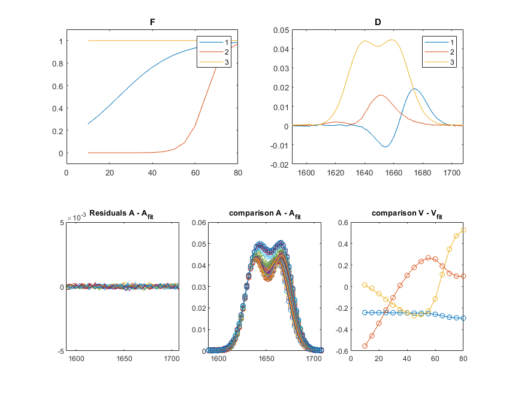

Example script for a typical analysis.
A typical data analysis using the transition model SVD recombination method is described in the following. The basic steps any analysis should contain, are:
- load some data
- choose a rank
- create/load a model
- choose/vary start parameters and/or bounds
- decompose and fit
- evaluate results
- repeat from 1 until reasonable and stable results are obtained
Contents
1. Load some data
The loading routine should provide:
- The absorbance/intensity/... array, here A.
- The vector with an energy equivalent (wavelength/wavenumber/frequency/...), here wavenumber.
- The control variable (time/temperature/potential/...), here c.
SpectralData = load ('sim_example_data.dat');
A = SpectralData(:,2:end);
wvnr = SpectralData(:,1);
c = [10:5:80];
2. choose a rank
Different criteria are discussed in detail by: Hendler et al. 1994, J Biochem Bioph Methods 28, 1-33. Here visual Inspection of U, S, and V is applied using RankFinder app. Within this programm the global variable rnk is defined.
global rnk;
app = RankFinder(wvnr,c,A);
waitfor(app.UIFigure);
Warning: The value of local variables may have been changed to match the globals. Future versions of MATLAB will require that you declare a variable to be global before you use that variable.
3. Define a transition model
A model for usage within this package consists of a cell array that contains handles to anonymous model functions. The model array is of size [1,n] with n the number of (c-dependent) transitions.
Create a simple sigmoidal model, from the standard library provided by the model_fun class:
n = 2; [Model ,Paralist] = simple_model(model_fun.sigmoid, n, 1);
The order of the parameters the parameter vectors, needed for the following steps is specified in the parameter name list 'Paralist' as it is returned above by simple_model(...):
disp(Paralist)
'c_mid_1'
'del_1'
'c_mid_2'
'del_2'
Alternatively, a list of parameter names can be created by:
Paralist = vecpar(Model)
Paralist =
4×1 cell array
{'c_mid_1'}
{'del_1' }
{'c_mid_2'}
{'del_2' }
4. choose/vary start parameters and/or bounds
3 parameter vectors must be constructed that contain start parameters, the lower bounds and and the upper bounds. The order and size of these parameter vectors is defined by 'Paralist'.
startparas = [30; 5; 90; 5]; lb = [0; 0; 0; 0]; ub = [100; 100; 100; 100];
Also, create an optimization options structure and define the important options:
ftopt = optimset ('Tolfun', 1e-18, ... 'MaxFunEvals',100000,... 'Display', 'iter',... 'TolX',1E-18,... 'MaxIter', 1000);
5. Decompose and fit
Call recombfit(...) to fit the model to the data.
[paramout,resnorm,residual,exitflag,output] = ...
recombfit(Model, c, A, rnk, startparas, lb, ub, ftopt);
Norm of First-order
Iteration Func-count f(x) step optimality
0 5 0.00102926 0.0108
1 10 0.000314153 0.613642 0.00314
2 15 0.000104422 1.3926 0.000133
3 20 0.000104422 3.27597 0.000133
4 25 8.89935e-05 0.818994 6.07e-05
5 30 5.02669e-05 1.63799 5.91e-05
6 35 8.27941e-06 1.2287 7.98e-05
7 40 3.58933e-06 0.453466 1.89e-05
8 45 3.46941e-06 0.0481009 4.42e-07
9 50 3.46776e-06 0.00724897 1.07e-07
10 55 3.46773e-06 0.000761509 1.05e-08
11 60 3.46773e-06 8.60925e-05 1.19e-09
12 65 3.46773e-06 9.7098e-06 1.32e-10
13 70 3.46773e-06 1.11443e-06 1.53e-11
14 75 3.46773e-06 2.31459e-07 8.53e-12
Local minimum possible.
lsqnonlin stopped because the final change in the sum of squares relative to
its initial value is less than the value of the function tolerance.
6. Assesment of the results
The matrix F may be determined by calculating the values for the fitted model, by:
F = eval_model(c, Model, paramout);
Alternatively, the result matrices and other matrices, useful for the assesment can be calculated by:
[F, D, A_fit, V_fit] = matres(A, c, Model, paramout, rnk); [~,~,V] = svd(A,0);
Plot the results for the transitions F and the associated spectral components.
f=figure('OuterPosition', [170, 190, 870, 750]); sp1 = subplot(2,2,1); plot(c, F ) title('F') legend(num2str([1:size(F,2)]')) sp1.YLim = [-0.1, 1.1]; sp2 = subplot(2,2,2); plot(wvnr, D) title('D') legend(num2str([1:size(D,2)]')) sp3 = subplot('Position', [0.13, 0.11, 0.22, 0.3259]); plot(wvnr, A-A_fit) title('Residuals A - A_{fit} ') sp3.YLim = 0.2*max(sp2.YLim)*[-1,1]; sp4 = subplot('Position', [0.4075, 0.11, 0.22, 0.3259]); plot(wvnr, A, 'o') hold(sp4, 'on') sp4.ColorOrderIndex = 1; plot(wvnr, A_fit) title('comparison A - A_{fit}') sp5 = subplot('Position', [0.685, 0.11, 0.22, 0.3259]); plot(c, V_fit) hold(sp5, 'on') sp5.ColorOrderIndex = 1; plot(c, V(:,1:rnk), 'o') title('comparison V - V_{fit}')